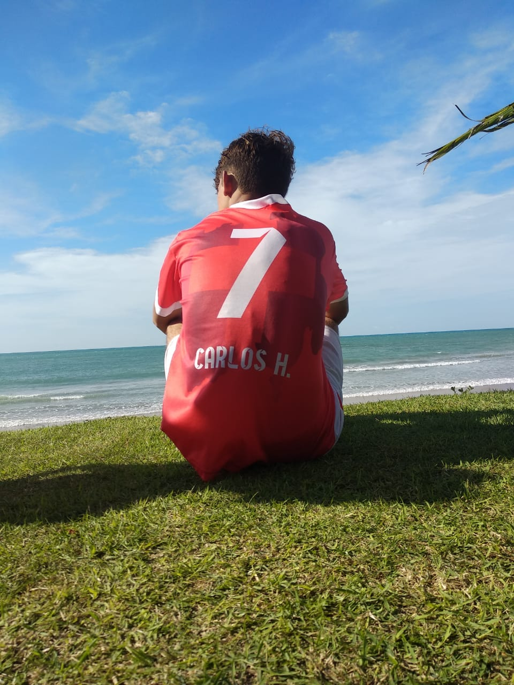

<!DOCTYPE html>
<html lang="pt-br">
<head>
    <meta charset="UTF-8">
    <meta name="viewport" content="width=device-width, initial-scale=1.0">
    <link rel="icon" type="image/png" href="imagens/logo.png">
    <title>Sistema Financeiro</title>
    <style>

 .content-dashboard {
    margin-left: 80px;
    flex-grow: 1;
    padding: 20px;
}       

#dashboard-page {
    position: relative;
    padding-top: 20px;
    padding-left: 20px;
}
        /* Classe específica para o dashboard/resumo semanal */
.calendario-dashboard-compacto {
    display: grid;
    grid-template-columns: repeat(7, 1fr);
    gap: 8px; 
    padding: 15px; 
    background-color: #f8fafc;
    border-radius: 12px;
    margin: 0 !important;
    align-content: start;
    min-height: auto !important;
    height: fit-content;

    /* ADICIONE ESTA LINHA PARA A LARGURA: */
    width: fit-content; 
}

        /* Container de Finanças */
        .financas-container {
            width: 100%;
            display: flex;
            flex-direction: column;
            align-items: center;
            margin-top: -200px;
        }

        .meta-wrapper {
            margin-top: 20px;
            display: flex;
            justify-content: center;
        }

        .progress-circle {
            position: relative;
            width: 220px;
            height: 220px;
        }

        .progress-circle svg {
            transform: rotate(-90deg); /* Inicia o progresso pelo topo */
        }

        /* Estilo do "Cano" */
        .circle-bg {
            fill: none;
            stroke: #e2e8f0; /* Cor de fundo suave */
            stroke-width: 18; /* Espessura do cano */
        }

        .circle-progress {
            fill: none;
            stroke: #6366f1; /* Roxo */
            stroke-width: 18;
            stroke-linecap: round; /* Pontas arredondadas */
            transition: stroke-dashoffset 0.8s ease;
        }

        /* Conteúdo Central */
        .circle-center {
            position: absolute;
            top: 50%;
            left: 50%;
            transform: translate(-50%, -50%);
            text-align: center;
            width: 100%;
        }

        .label-ganhos {
            display: block;
            font-size: 15px;
            color: #64748b;
        }

        .valor-atual {
            display: block;
            font-size: 30px;
            font-weight: bold;
            color: #6366f1;
            margin: 4px 0;
        }

        .meta-info {
            display: block;
            font-size: 12px;
            color: #94a3b8;
        }

        .selection-title-alinhado {
            color: #64748b;
            font-size: 15px;
            margin-top: 0px;
            margin-bottom: 40px;
            font-weight: 500;
            text-align: center;    /* Centraliza o texto horizontalmente */
        }

        /* Container que centraliza o conjunto */
        .layout-entregas {
            display: flex;
            gap: 60px; /* Espaço reduzido entre eles conforme conversamos */
            align-items: flex-start; 
            justify-content: center; /* Centraliza o bloco todo na tela */
            width: 100%;
        }

        /* Ajuste no Calendário Mensal */
        .calendario-container {
            display: grid;
            grid-template-columns: repeat(7, 1fr);
            gap: 8px; 
            padding: 15px; 
            background-color: #f8fafc;
            border-radius: 12px;
            margin: 0 !important; /* REMOVIDO margin-right: auto para não quebrar a centralização */
            min-height: 580px; 
            align-content: start;
        }

        /* Ajuste na Grade de Lucros Anual */
        .entregas-mensal-grid {
            display: grid;
            grid-template-columns: repeat(4, 1fr);
            gap: 25px;
            /* O SEGREDO: O padding de 15px do calendário mensal + os 8px de gap 
            fazem o primeiro card de lucro precisar de um ajuste no topo */
            padding-top: 15px; 
            margin: 0 !important;
        }

        /* Estilo do Card de Lucro Individual */
        .card-entregas-total {
            background-color: white;
            border: 1px solid #e2e8f0;
            border-radius: 10px;
            width: 130px;
            height: 100px;
            display: flex;
            flex-direction: column;
            overflow: hidden;
        }

        .card-entregas-total-header {
            background-color: #6366f1;
            color: white;
            font-weight: bold;
            padding: 8px;
            text-align: center;
            font-size: 0.9rem;
        }

        .card-entregas-total-quant {
            color: #64748b;
            font-weight: 800;
            font-size: 1.6rem;
            display: flex;
            align-items: center;
            justify-content: center;
            flex: 1;
        }

        .filtros-container {
            display: flex;
            justify-content: center;
            align-items: center;
            gap: 15px;
            margin-bottom: 25px;
            background: white;
            padding: 15px;
            border-radius: 12px;
            box-shadow: 0 4px 6px -1px rgba(0, 0, 0, 0.1);
        }

        .filtro-item {
            display: flex;
            flex-direction: column;
            gap: 5px;
        }

        .filtro-item label {
            font-size: 0.8rem;
            color: #64748b;
            font-weight: 600;
        }

        .filtro-item select {
            padding: 8px 32px 8px 12px; /* padding-right maior para dar espaço à seta */
            border: 1px solid #e2e8f0;
            border-radius: 8px;
            background-color: #f8fafc;
            background-image: url("data:image/svg+xml,%3Csvg xmlns='http://www.w3.org/2000/svg' width='12' height='12' viewBox='0 0 12 12'%3E%3Cpath fill='none' stroke='%236366f1' stroke-width='2' stroke-linecap='round' stroke-linejoin='round' d='M2 4l4 4 4-4'/%3E%3C/svg%3E");    background-repeat: no-repeat;
            background-position: right 10px center; /* ← aqui você controla: aumente para afastar mais */
            appearance: none;
            -webkit-appearance: none;
            color: #1e293b;
            font-family: inherit;
            cursor: pointer;
            outline: none;
            transition: border-color 0.2s;
        }

        .filtro-item select:focus {
            border-color: #6366f1; /* Cor padrão do seu site */
        }

        .dia-semana-card {
            background-color: #6366f1;
            color: white;
            padding: 10px;
            text-align: center;
            border-radius: 8px;
            font-weight: bold;
            font-size: 0.9rem;
            width: 55px;   /* ← fixo */
            height: 41px;  /* ← fixo */
            box-sizing: border-box;
            display: flex;
            align-items: center;
            justify-content: center;
        }

        .dia-mes-card {
            background-color: white;
            border: 1px solid #e2e8f0;
            border-radius: 8px;
            width: 55px;   /* ← mesmo valor */
            height: 55px;  /* ← igual à largura, substitui o aspect-ratio */
            display: flex;
            flex-direction: column;
            align-items: center;
            justify-content: space-between;
            transition: transform 0.2s;
            overflow: hidden;
            padding: 0;
            box-sizing: border-box;
        }

        .data-texto {
            font-size: 0.75rem;
            color: #64748b;
            display: flex;
            align-items: center;
            flex: 1; /* Ocupa metade do card */
        }

        /* LINHA CINZA QUE PREENCHE TUDO */
        .divisor-card {
            width: 100%;
            height: 1px;
            background-color: #e2e8f0;
        }

        .qtd-entregas {
            font-weight: 900;
            color: #6366f1;
            font-size: 1.4rem;
            display: flex;
            align-items: center;
            flex: 1; /* Ocupa a outra metade */
        }

        .vazio {
            background: transparent;
            border: none;
            pointer-events: none;
        }

        /* Container do carregamento */
        .loader-container {
            display: flex;
            flex-direction: column;
            align-items: center;
            justify-content: center;
            min-height: 200px;
            width: 100%;
        }

        /* O círculo que gira */
        .spinner {
            width: 40px;
            height: 40px;
            border: 4px solid #f3f3f3; /* Cor do fundo do círculo */
            border-top: 4px solid #6366f1; /* Cor da parte que gira (mesmo Indigo que você usa) */
            border-radius: 50%;
            animation: spin 1s linear infinite;
            margin-bottom: 15px;
        }

        /* Animação de rotação */
        @keyframes spin {
            0% { transform: rotate(0deg); }
            100% { transform: rotate(360deg); }
        }

        /* Texto de carregando */
        .loader-text {
            color: #64748b;
            font-weight: 600;
            font-size: 16px;
        }

        .progresso-texto {
            color: #64748b;
            font-weight: 600;
            font-size: 14px;
            text-align: center; /* Centraliza o texto 1/1 */
            margin-top: 8px;    /* Espaço entre a barra e o texto */
            display: block;      /* Garante que ocupe a largura total para centralizar */
        }

        /* Container da barra */
        .progresso-container {
            width: 100%;
            height: 8px;
            background-color: #e2e8f0;
            border-radius: 10px;
            margin-top: 15px; /* Espaço após o label 'Parcelas' */
            overflow: hidden;
        }

        /* A barra preenchida */
        .progresso-barra {
            height: 100%;
            background-color: #6366f1; /* Mesmo Indigo que você já usa */
            border-radius: 10px;
            transition: width 0.3s ease; /* Efeito suave ao carregar */
        }        
        /* Grid de Cards */
        .cards-grid {
            display: grid;
            grid-template-columns: repeat(auto-fill, 260px);
            gap: 25px;
            width: 100%;
            justify-content: center;
        }

        /* Estilo do Card Vertical */
        .card-conta-edit {
            background: white;
            border-radius: 12px;
            padding: 25px;
            box-shadow: 0 10px 25px rgba(0, 0, 0, 0.08);
            cursor: pointer;
            transition: all 0.3s ease;
            border: 1px solid #e2e8f0;
            display: flex;
            flex-direction: column;
            height: 360px; /* Reduzido de 380px para 360px */
            text-align: left;
        }

        .card-conta-edit:hover {
            transform: translateY(-5px);
            border-color: #6366f1;
            box-shadow: 0 15px 30px rgba(99, 102, 241, 0.15);
        }

        /* Cabeçalho: Credor e Valor */
        .card-header-credor {
            margin-bottom: 20px;
            text-align: center; /* Apenas o topo centralizado como na imagem */
        }

        .nome-credor {
            display: block;
            color: #6366f1;
            font-weight: 700;
            font-size: 22px; /* Título maior */
            margin-bottom: 10px;
        }

        .valor-total-restante {
            display: block;
            color: #64748b;
            font-size: 28px; /* Valor em destaque */
            font-weight: 800;
        }

        /* Estilização dos Títulos (Primeira letra maiúscula e Negrito) */
        .label-card {
            display: block;
            color: #6366f1;
            font-weight: 700;
            font-size: 16px;
            margin-bottom: 8px;
            text-transform: capitalize; /* Garante primeira letra maiúscula */
        }

        .desc-card {
            color: #64748b;
            font-size: 14px;
            line-height: 1.5;
            
            /* LIMITA A APENAS 1 LINHA COM 3 PONTOS */
            white-space: nowrap;      /* Impede o texto de pular para a linha de baixo */
            overflow: hidden;         /* Esconde o que sobrar */
            text-overflow: ellipsis;  /* Adiciona os "..." no final */
            
            /* RESERVA O ESPAÇO DE 1 LINHA (14px * 1.5 = 21px) */
            height: 21px;             
            display: block;           /* Garante que o elemento se comporte como bloco */
            margin-bottom: 0;
        }

        /* Isso remove qualquer linha de cima ou de baixo nessas secções */
        .card-body, 
        .card-footer-parcelas, 
        .card-header-credor {
            border: none !important;
            border-top: none !important;
            border-bottom: none !important;
            padding-top: 5px;   /* Ajuste apenas para não ficar colado */
            margin-top: 10px;   /* Espaço entre os blocos de texto */
        }


        /* Limpa qualquer resquício de borda sólida que possa vir de outras classes */
        .card-body, .card-footer-parcelas {
            position: relative;
            padding-top: 20px;
            margin-top: 20px;
            border: none !important; /* Mata a borda sólida de vez */
        }

        /* Define a linha de gradiente ÚNICA para ambos */
        .card-body::before, 
        .card-footer-parcelas::before {
            content: "";
            position: absolute;
            top: 0;
            left: 0;
            width: 100%;
            height: 1px;
            background: linear-gradient(to right, 
                rgba(203, 213, 225, 0) 0%, 
                rgba(203, 213, 225, 1) 50%, 
                rgba(203, 213, 225, 0) 100%
            );
            display: block !important;
        }


        .card-footer-parcelas {
            border-top: 1px solid #f1f5f9;
            padding-top: 10px;
        }

        /* Container Geral de Layout */
        .container-flex-contas {
            display: flex;
            justify-content: center;
            align-items: flex-start;
            gap: 30px;
            margin-top: 20px;
        }

        /* Formulário Principal */
        .form-conta-principal {
            min-width: 400px;
        }

        /* Container das Parcelas (Moldura Cinza) */
        .lista-parcelas-contas {
            width: fit-content !important; 
            min-width: auto !important;   
            padding: 20px;
            animation: fadeInRight 0.5s forwards;
        }

        /* Área interna de rolagem */
        .scroll-vazado {
            max-height: 300px;
            overflow-y: auto;
            overflow-x: hidden;
            padding-right: 5px;
            width: fit-content;
        }

        /* Linha das parcelas */
        .linha-parcela-vazada {
            display: flex;
            align-items: center;
            gap: 10px;
            margin-bottom: 10px;
            width: fit-content;
        }

        /* O Campo Branco para o número (Igual aos inputs) */
        .num-parcela-field {
            background-color: white;
            color: #6366f1;
            font-weight: 700;
            font-size: 13px;
            width: 45px;      /* Largura fixa para o quadradinho */
            height: 35px;     /* Altura idêntica aos seus inputs padrão */
            display: flex;
            align-items: center;
            justify-content: center;
            border-radius: 8px;
            border: 1px solid #e2e8f0; /* Mesma borda dos seus inputs */
            box-shadow: 0 1px 2px rgba(0, 0, 0, 0.05);
            user-select: none;
            cursor: default;
        }

        /* Estilização do Scrollbar Indigo */
        .scroll-vazado::-webkit-scrollbar {
            width: 4px;
        }
        .scroll-vazado::-webkit-scrollbar-thumb {
            background: #6366f1;
            border-radius: 10px;
        }

        /* Animação de entrada */
        @keyframes fadeInRight {
            from { opacity: 0; transform: translateX(20px); }
            to { opacity: 1; transform: translateX(0); }
        }

        .table-scroll {
            max-height: 260px;
            overflow-y: auto;
            overflow-x: hidden;
        }

        .table-scroll::-webkit-scrollbar {
            width: 4px;
        }

        .table-scroll::-webkit-scrollbar-track {
            background: transparent;
        }

        .table-scroll::-webkit-scrollbar-thumb {
            background-color: #6366f1;
            border-radius: 10px;
        }

        /* Estilos para a Tabela de Edição */
        .edit-table {
            width: 100%;
            border-collapse: separate;
            border-spacing: 0 8px; /* Espaço entre as linhas */
            margin-top: 10px;
        }

        .edit-table thead th {
            background-color: #6366f1;
            color: white;
            padding: 12px;
            font-size: 14px;
            font-weight: 500;
            text-align: left;
        }

        /* Arredondar cantos do cabeçalho */
        .edit-table thead th:first-child { border-radius: 8px 0 0 8px; }
        .edit-table thead th:last-child { border-radius: 0 8px 8px 0; }

        .edit-row {
            background-color: white;
            cursor: pointer;
            transition: transform 0.2s, box-shadow 0.2s;
        }

        /* Regra da linha com elevação suave */
        .edit-row:hover {
            transform: translateY(-2px); 
            box-shadow: 0 6px 15px rgba(99, 102, 241, 0.15); /* Sombra levemente azulada */
            background-color: #f8fafc; 
            z-index: 10; 
            position: relative; 
            transition: all 0.3s ease;
        }

        /* Engrossando a borda lateral e colorindo o contorno */
        .edit-row:hover td {
            border-top-color: #6366f1;
            border-bottom-color: #6366f1;
        }

        /* Deixa a borda da esquerda igual à de cima/baixo */
        .edit-row:hover td:first-child {
            border-left: 1px solid #6366f1 !important;
        }

        /* Deixa a borda da direita igual à de cima/baixo */
        .edit-row:hover td:last-child {
            border-right: 1px solid #6366f1 !important;
        }

        .edit-row td {
            padding: 12px;
            color: #64748b;
            font-size: 14px;
            border-top: 1px solid #f1f5f9;
            border-bottom: 1px solid #f1f5f9;
        }

        /* Arredondar cantos das linhas brancas */
        .edit-row td:first-child { border-left: 1px solid #f1f5f9; border-radius: 8px 0 0 8px; }
        .edit-row td:last-child { border-right: 1px solid #f1f5f9; border-radius: 0 8px 8px 0; }

        /* Nova estrutura de linhas para o formulário */
        .form-row {
            display: flex;
            gap: 20px; /* Espaço entre a coluna da esquerda e direita */
            margin-bottom: 15px;
        }

        /* Garante que cada grupo de input ocupe metade da largura */
        .form-row .input-group {
            flex: 1;
        }

        /* Ajuste específico para o campo de data */
        input[type="date"].custom-input {
            width: 100%;
            /* Removido o flex e o align-items para não bugar a edição */
            line-height: 36px; /* Alinha o texto verticalmente à altura do campo */
        }

        /* Estilização do ícone do calendário para combinar com o tema */
        input[type="date"]::-webkit-calendar-picker-indicator {
            cursor: pointer;
            filter: invert(42%) sepia(85%) saturate(3260%) hue-rotate(222deg) brightness(101%) contrast(94%);
        }

        /* Ajuste no container para ele alargar um pouco para acomodar as duas colunas */
        .selection-container {
            min-width: 450px;
        }

        /* Estilos para o novo formulário */
        .form-container {
            display: flex;
            flex-direction: column;
            gap: 15px;
        }

        .input-group {
            display: flex;
            flex-direction: column;
            gap: 5px;
        }

        .input-group label {
            color: #ffffff;
            font-size: 13px;
            opacity: 0.8;
        }

        /* Base para todos os campos (com borda invisível ou da cor do fundo) */
        .custom-input, .custom-select {
            height: 36px;
            border-radius: 6px;
            padding: 0 12px;
            font-size: 14px;
            color: #1e293b;
            outline: none;
            /* A mágica está aqui: borda já existe, mas é transparente */
            border: 1px solid transparent; 
            transition: all 0.2s ease;
        }

        /* Classe flexível para foco sem tremer */
        .input-focus-indigo:focus {
            outline: none;
            border: 1px solid #6366f1 !important; 
            box-shadow: 0 0 0 2px rgba(99, 102, 241, 0.2);
        }


        .custom-select {
            cursor: pointer;
            background-color: white;
            padding-right: 35px;
            appearance: none;
            -webkit-appearance: none;
            -moz-appearance: none;
            background-image: url("data:image/svg+xml;charset=UTF-8,%3Csvg xmlns='http://www.w3.org/2000/svg' width='12' height='12' viewBox='0 0 24 24' fill='none' stroke='%2364748b' stroke-width='3' stroke-linecap='round' stroke-linejoin='round'%3E%3Cpolyline points='6 9 12 15 18 9'%3E%3C/polyline%3E%3C/svg%3E");
            background-repeat: no-repeat;
            background-position: right 12px center;
            /* Mantendo a borda padrão para evitar o pulo */
            border: 1px solid #ffffff; 
        }

        .btn-salvar {
            margin-top: 10px;
            height: 40px;
            background-color: #6366f1;
            color: white;
            border: none;
            border-radius: 6px;
            font-weight: 600;
            cursor: pointer;
            transition: background 0.3s;
        }

        .btn-salvar:hover {
            background-color: #4f46e5; /* Cor alterada para o tom mais escuro igual ao prosseguir */
        }

        /* Container do botão de ação */
        .action-area {
            max-height: 0;
            overflow: hidden;
            opacity: 0;
            display: flex;
            justify-content: center; /* Centraliza o botão */
            /* Animação de expansão suave */
            transition: max-height 0.5s cubic-bezier(0.4, 0, 0.2, 1), 
                        opacity 0.3s ease, 
                        margin-top 0.4s ease;
        }

        /* Quando visível */
        .action-area.visible {
            max-height: 100px;
            margin-top: 25px;
            opacity: 1;
        }

        .btn-prosseguir {
            height: 36px;
            padding: 0 30px;
            background-color: #6366f1;
            color: white;
            border: none;
            border-radius: 6px;
            /* Tamanho da fonte igual às opções (15px) */
            font-size: 15px; 
            font-weight: 500;
            cursor: pointer;
            transition: background 0.3s;
        }

        .btn-prosseguir:hover {
            background-color: #4f46e5;
        }

        /* Centralização total do conteúdo */
        .content {
            display: flex;
            justify-content: center;
            align-items: center;
            min-height: 100vh;
            margin-left: 60px;
        }

        /* Container Principal */
        .selection-container {
            background-color: #64748b;
            padding: 35px;         /* Mantém o respiro interno igual em todos os lados */
            border-radius: 16px;
            text-align: left;
            display: inline-block; /* Faz a div abraçar o conteúdo exatamente */
            width: fit-content;    /* Garante que ela se ajuste ao tamanho das opções */
        }

        .selection-title {
            color: #ffffff;
            font-size: 15px;
            margin-bottom: 22px;
            font-weight: 500;
            opacity: 0.7;
            /* Removido o margin-top para manter a posição original */
        }

        .options-group {
            display: flex;
            flex-wrap: wrap;
            gap: 12px;
            justify-content: flex-start; /* Alinha as opções ao início do container */
        }

        .option-item input[type="radio"] {
            display: none;
        }

        /* Retângulo da Opção */
        .option-label {
            display: flex;
            align-items: center;
            cursor: pointer;
            background: #ffffff;
            border-radius: 6px;
            height: 36px;
            overflow: hidden; /* Garante que o fundo azul respeite o arredondamento */
            transition: all 0.2s ease;
        }

        /* Quadrado do Ícone */
        .check-box {
            width: 38px;
            height: 36px;
            display: flex;
            align-items: center;
            justify-content: center;
            background-color: transparent; /* Fica transparente para mostrar o azul do pai */
            transition: background-color 0.2s;
        }

        /* Ícone de Check */
        .check-icon {
            width: 16px;
            height: 16px;
            object-fit: contain;
            filter: grayscale(100%) brightness(0.6); 
            opacity: 0.5; 
            transition: all 0.3s;
        }

        /* Texto da Opção */
        .option-text {
            height: 100%;
            display: flex;
            align-items: center;
            padding: 0 20px;
            color: #64748b;
            font-weight: 500;
            font-size: 15px;
            background-color: #ffffff; /* Mantém o fundo branco para esconder o azul do pai nesta parte */
            border-left: 0px solid transparent; 
            transition: border-width 0.2s ease;
        }

        /* --- ESTADO SELECIONADO (CORRIGIDO) --- */

        /* Aplicamos o azul no PAI para cobrir as quinas perfeitamente */
        .option-item input[type="radio"]:checked + .option-label {
            background-color: #6366f1;
        }

        .option-item input[type="radio"]:checked + .option-label .check-icon {
            filter: grayscale(0%) brightness(1);
            opacity: 1;
        }

        /* O CORTE MAIS LARGO */
        .option-item input[type="radio"]:checked + .option-label .option-text {
            border-left: 4px solid #64748b; 
        }

        /* Container do submenu */
        .submenu {
            max-height: 0; /* Controla a expansão vertical */
            overflow: hidden;
            list-style: none;
            padding-left: 57px;
            transition: max-height 0.4s cubic-bezier(0.4, 0, 0.2, 1); /* Transição suave de altura */
        }

        /* Quando o submenu está aberto */
        .submenu.open {
            max-height: 150px; /* Valor alto o suficiente para caber os 3 itens */
            margin-top: 5px;
        }

        /* Animação individual dos itens (o "descendo") */
        .submenu li {
            opacity: 0;
            transform: translateY(-20px); /* Começam 20px para cima */
            transition: transform 0.3s ease, opacity 0.3s ease;
        }

        /* Quando o pai (.open) é ativado, os itens descem para a posição original */
        .submenu.open li {
            opacity: 1;
            transform: translateY(0);
        }

        /* Pequeno delay para os itens descerem em cascata (opcional, fica bem elegante) */
        .submenu.open li:nth-child(1) { transition-delay: 0.1s; }
        .submenu.open li:nth-child(2) { transition-delay: 0.15s; }
        .submenu.open li:nth-child(3) { transition-delay: 0.2s; }

        .submenu li a {
            display: block;
            padding: 6px 0;
            color: #64748b;
            text-decoration: none;
            font-size: 15px;
            font-weight: 500;
            font-family: 'Segoe UI', sans-serif;
        }

        .submenu li a:hover {
            color: #6366f1;
        }

        * {
            margin: 0;
            padding: 0;
            box-sizing: border-box;
            font-family: 'Segoe UI', sans-serif;
        }

        body {
            background-color: #f8f9fd;
            display: flex;
        }

        /* Sidebar */
        .sidebar {
            width: 60px;
            height: 100vh;
            background-color: #ffffff;
            padding: 15px 5px;
            display: flex;
            flex-direction: column;
            overflow: hidden;
            transition: width 0.3s ease;
            position: fixed;
            z-index: 100;
        }

        .sidebar::after {
            content: "";
            position: absolute;
            right: 0;
            top: 0;
            width: 1px;
            height: 100%;
            background: #bdbef1;
        }

        .sidebar:hover {
            width: 210px;
        }

        /* Cabeçalho do Usuário com Círculo Colorido */
        .header-profile {
            display: flex;
            align-items: center;
            padding: 5px 5px;
            margin-bottom: 30px;
            text-decoration: none;
            white-space: nowrap;
        }

        .profile-circle {
            min-width: 40px; /* Um pouco maior para a foto caber dentro */
            height: 40px;
            background-color: #6366f1; /* A cor que você pediu */
            border-radius: 50%;
            display: flex;
            align-items: center;
            justify-content: center;
            overflow: hidden; /* Garante que a foto não saia do círculo */
        }

        .profile-img {
            width: 85%; /* Ajusta o tamanho da foto dentro do círculo */
            height: 85%;
            border-radius: 50%;
            object-fit: cover;
        }

        .profile-name {
            margin-left: 15px;
            color: #000000;
            font-weight: 600;
            font-size: 16px;
            opacity: 0;
            transition: opacity 0.2s;
        }

        .sidebar:hover .profile-name {
            opacity: 1;
        }

        /* Lista de Menus */
        .menu-list {
            list-style: none;
        }

        .menu-item {
            display: flex;
            align-items: center;
            padding: 8px 13px;
            margin-bottom: 2px;
            text-decoration: none;
            color: #64748b;
            border-radius: 12px;
            transition: all 0.3s ease;
            font-weight: 500;
            white-space: nowrap;
        }

        .menu-icon {
            min-width: 24px;
            height: 24px;
            margin-right: 20px;
            object-fit: contain;
            transition: filter 0.3s ease; 
        }

        .menu-item.active {
            background-color: #f0f2ff;
            color: #6366f1;
        }

        .menu-item:hover:not(.active) {
            background-color: #f9fafb;
            color: #1a1d23;
        }

        .menu-item.active .menu-icon {
            filter: invert(41%) sepia(55%) saturate(5843%) hue-rotate(224deg) brightness(96%) contrast(101%);
        }

        .menu-item:hover:not(.active) .menu-icon {
            filter: brightness(0);
        }

        .links-name {
            opacity: 0;
            transition: opacity 0.2s;
        }

        .sidebar:hover .links-name {
            opacity: 1;
        }

        .content {
            margin-left: 80px;
            flex-grow: 1;
            padding: 40px;
        }

        
        h1 {
            color: #1a1d23;
            font-size: 1.8rem;
        }
    </style>
</head>
<body>

    <aside class="sidebar">
        <div class="header-profile">
            <div class="profile-circle">
                
            </div>
            <span class="profile-name">Carlos Henrique</span>
        </div>

<nav>
    <ul class="menu-list">
        <li>
            <a href="#" class="menu-item active" onclick="navegar('home')">
                
                <span class="links-name">Home</span>
            </a>
        </li>
        <li>
            <a href="#" class="menu-item" onclick="navegar('dashboard')">
                
                <span class="links-name">Dashboard</span>
            </a>
        </li>
        <li>
            <a href="#" class="menu-item" onclick="navegar('entregas')">
                
                <span class="links-name">Entregas</span>
            </a>
        </li>
        <li>
            <a href="#" class="menu-item" onclick="navegar('servicos')">
                
                <span class="links-name">Serviços</span>
            </a>
        </li>
        <li>
            <a href="#" class="menu-item" onclick="navegar('financas')">
                
                <span class="links-name">Finanças</span>
            </a>
        </li>

        <!-- Esse é o ícone de registros caso eu queira adicionar
        <li>
            <a href="#" class="menu-item" onclick="navegar('registros')">
                
                <span class="links-name">Registros</span>
            </a>
        </li>
        Apagar até aqui -->

        <li>

            <a href="#" class="menu-item" onclick="toggleSubmenu(event, 'submenu-controle')">
                
                <span class="links-name">Controle</span>
            </a>
            <ul id="submenu-controle" class="submenu">
                <li><a href="#" onclick="navegar('adicionar')">Adicionar</a></li>
                <li><a href="#" onclick="navegar('editar')">Editar</a></li>
                <li><a href="#" onclick="navegar('apagar')">Apagar</a></li>
            </ul>
        </li>
    </ul>
</nav>
    </aside>
<script src="https://cdn.jsdelivr.net/npm/@supabase/supabase-js@2"></script>
<script src="script.js"></script>
    <main class="content" id="main-content">
    </main>
</body>
</html>